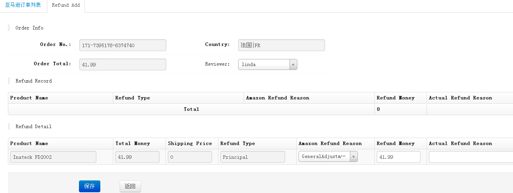
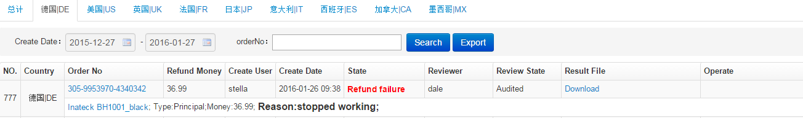

退款列表
新增退款:

- 点击ERP中任何一处订单号链接进入到订单详情页面，勾选货品信息中相应产品，点击Refund退款按钮，进入到退款新增页面，页面根据勾选的产品显示相应退款产品信息
- 选择Reviewer退款审核人审批退款申请，Refund Record是关于订单所有通过ERP系统退款记录
- 输入实际退款原因和退款金额，保存退款申请，等待Reviewer退款审核人审批，审批通过才会向亚马逊提交请求退款操作
退款列表:

- 查看各平台所有通过ERP操作的退款记录，Operate列，点击Cancel按钮，取消此次退款申请，点击Pass按钮，统一此次退款申请，同时会向亚马逊提交请求退款操作